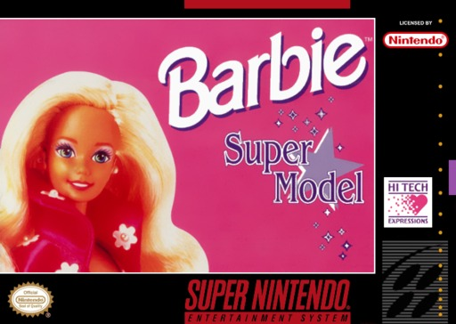
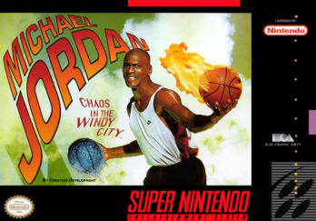
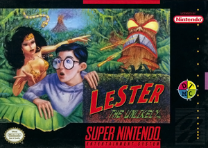
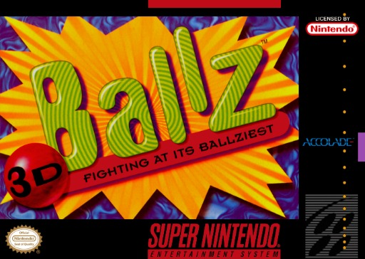
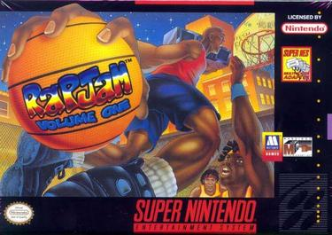
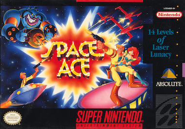
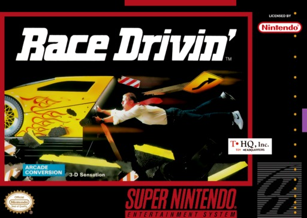
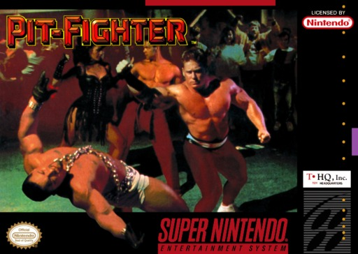
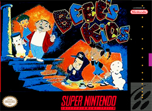
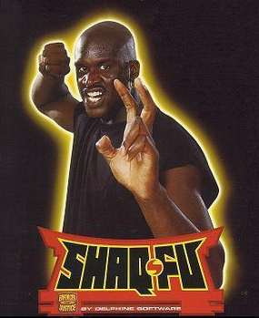

Contamos en cuantas listas de peores aparece cada juego (Nintendo Power y EGM de 1997, GameTrailers, Den of Geek, TheGamer, CBR y mas), sumamos la leyenda de cada cartucho y dejamos afuera lo que ya esta en nuestro Top Mundial. Solo juegos con licencia Nintendo y venta normal.
03
#10
EN 1 LISTA

SNES
TARROVISIONCH 10
NO SIGNAL
Inserta gameplay aqui
BARBIE: SUPER MODEL
SNES · 1993 · HI TECH EXPRESSIONS · NINTENDO POWER 1997 (10 PEORES)
▶ PREMIO AL DESFILE CON PRUEBA DE MEMORIAHay que recordar la coreografia de un desfile, manejar un convertible por Hollywood, patinar en Hawaii y esquiar en Vail. Nintendo Power la puso en su lista de los 10 peores juegos de la historia en 1997.
04
#9
EN 1 LISTA

SNES
TARROVISIONCH 09
NO SIGNAL
Inserta gameplay aqui
MICHAEL JORDAN: CHAOS IN THE WINDY CITY
SNES · 1994 · ELECTRONIC ARTS · NINTENDO POWER 1997 (#7)
▶ PREMIO AL PARTIDO BENEFICO MAS COMPLICADOUn cientifico loco llamado Maximus Cranium secuestra a los companeros de Jordan antes de un partido benefico. Los rescatas con balones que congelan o explotan, y cada mate activa un checkpoint. Nintendo Power: 'un desperdicio de licencia'.
05
#8
EN 2 LISTAS

SNES
TARROVISIONCH 08
NO SIGNAL
Inserta gameplay aqui
LESTER THE UNLIKELY
SNES · 1994 · DTMC (DEV. VISUAL CONCEPTS) · DEN OF GEEK (#2) + THEGAMER
▶ PREMIO AL HEROE QUE QUIERE IRSE TANTO COMO TUUn adolescente fanatico de los comics queda varado en una isla y se asusta de todo: grita, huye y recien despues agarra confianza. Den of Geek lo puso segundo entre los peores del SNES.
06
#7
EN 3 LISTAS

SNES
TARROVISIONCH 07
NO SIGNAL
Inserta gameplay aqui
BALLZ 3D
SNES · 1994 · ACCOLADE (DEV. PF.MAGIC) · DEN OF GEEK (#9) + THEGAMER + GAME INFORMER 2011 (#7)
▶ PREMIO AL TORNEO DE PELOTAS CON ESLOGAN CENSURADOUn juego de pelea donde todos los luchadores estan hechos de pelotas: un mono, un payaso, un sumo, un avestruz, una bailarina y un rinoceronte. Nintendo pidio cambiar el eslogan de la intro. Game Informer lo puso en su lista de peleas que queremos olvidar.
07
#6
EN 3 LISTAS

SNES
TARROVISIONCH 06
NO SIGNAL
Inserta gameplay aqui
RAP JAM: VOLUME ONE
SNES · 1995 · MOTOWN GAMES (DEV. 64WD) · EGM 1997 (#9) + SEANBABY (#14) + GAME RANT
▶ PREMIO AL VOLUMEN UNO... Y UNICOBasquet callejero con raperos de los 90, a golpes y sin faltas. Se llama Volume One porque iba a haber mas, pero no hubo: fue el unico volumen. Electronic Gaming Monthly lo puso 9 entre los peores de la historia.
08
#5
EN 3 LISTAS

SNES
TARROVISIONCH 05
NO SIGNAL
Inserta gameplay aqui
SPACE ACE
SNES · 1994 · ABSOLUTE ENTERTAINMENT · THEGAMER (#1) + DEN OF GEEK (#6) + TIME EXTENSION
▶ PREMIO AL DIBUJO ANIMADO QUE SE VOLVIO CASTIGOEl arcade de dibujos en laserdisc se volvio un plataformas con controles blandos y dificultad cruel. TheGamer lo nombro el peor juego del SNES. Nintendo temia que un sonido del arcade se confundiera con una mala palabra.
09
#4
EN 3 LISTAS

SNES
TARROVISIONCH 04
NO SIGNAL
Inserta gameplay aqui
RACE DRIVIN'
SNES · 1992 · THQ (DEV. IMAGINEERING) · DEN OF GEEK (#3) + GAME RANT + CBR
▶ PREMIO A LA PRESENTACION DE DIAPOSITIVAS CON VOLANTEEl arcade de manejo en 3D convertido para el SNES sin usar el chip Super FX: corre a unos 4 frames por segundo. Nintendo Power le dio 9,7 de 20 y Super Play, 35%.
10
#3
EN 3 LISTAS

SNES
TARROVISIONCH 03
NO SIGNAL
Inserta gameplay aqui
PIT-FIGHTER
SNES · 1992 · THQ (DEV. EASTRIDGE TECHNOLOGY) · DEN OF GEEK (#1) + CBR + NINTENDO POWER 1997
▶ PREMIO AL ARCADE QUE LLEGO SIN PUBLICOEn el SNES llego sin el publico, sin las armas y sin tres rivales. Nintendo Power dijo que era extremadamente dificil de controlar. Den of Geek lo puso primero entre los peores del SNES, y Nintendo Power lo metio en sus 10 peores de la historia.
11
#2
EN 3 LISTAS

SNES
TARROVISIONCH 02
NO SIGNAL
Inserta gameplay aqui
BEBE'S KIDS
SNES · 1994 · MOTOWN GAMES / PARAMOUNT (DEV. RADICAL) · NINTENDO POWER 1997 + DEN OF GEEK (#10) + TIME EXTENSION
▶ PREMIO A LA PELEA EN CAMARA LENTAUn beat 'em up basado en una pelicula animada, en un parque de diversiones lleno de guardias, mascotas y piratas. Nintendo Power dijo que la accion era extremadamente lenta y que los enemigos aguantaban golpes sin fin.
12
#1
EN 5 LISTAS

SNES
TARROVISIONCH 01
NO SIGNAL
Inserta gameplay aqui
SHAQ FU
SNES · 1994 · ELECTRONIC ARTS (DEV. DELPHINE) · NINTENDO POWER 1997 (#3) + EGM 1997 (#10) + GAMETRAILERS (#4) + THEGAMER + CBR
▶ PREMIO AL CAMINO MAS LARGO A UN PARTIDO BENEFICOShaq va a un partido benefico, entra a un dojo en Tokio por error, lo confunden con un guerrero elegido y termina en otra dimension peleando contra una momia. Nintendo Power lo puso 3 entre los peores de la historia, EGM 10 y GameTrailers 4.
13
ANALISIS DEL TOP
1994: EL AÑO DE LAS LICENCIAS APURADAS
Seis de los diez salieron en 1994. Cinco venden un nombre famoso (Jordan, Shaq, Barbie, una pelicula y un grupo de raperos) y tres son ports de arcades. Y hay hilos: EA abre y cierra el top, THQ aparece dos veces seguidas y Motown dos veces.
14
GAME OVER
INSERTA MONEDA PARA CONTINUAR
Coco cierra tocando el tema de Game Over en bateria. ¿Cual fue el peor cartucho de SNES que les toco jugar? Cuentanos en los comentarios y cual consola quieren que siga.